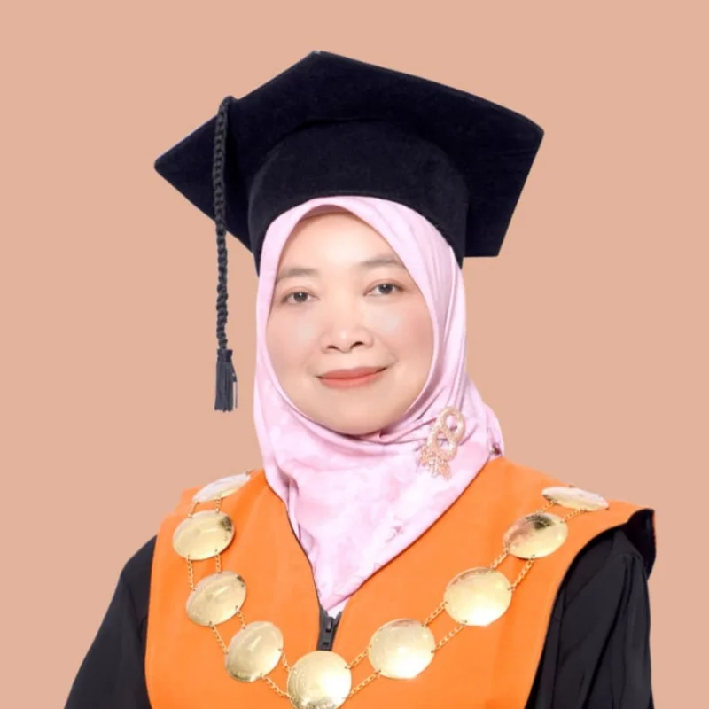
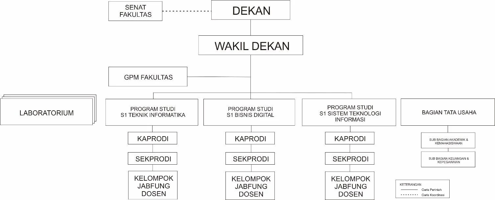
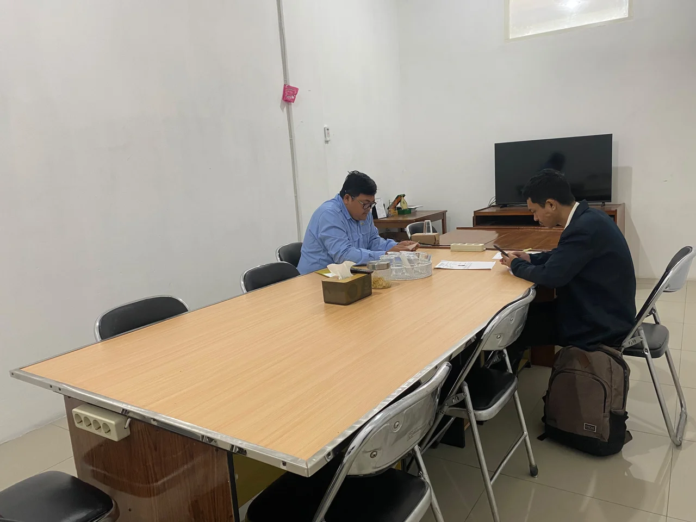
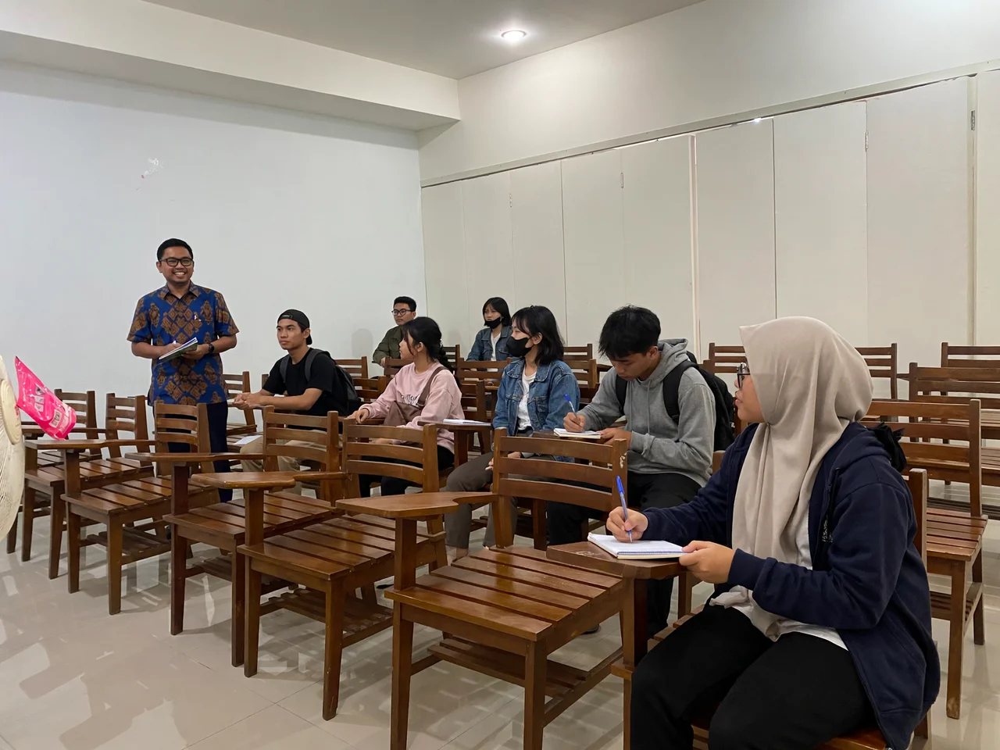
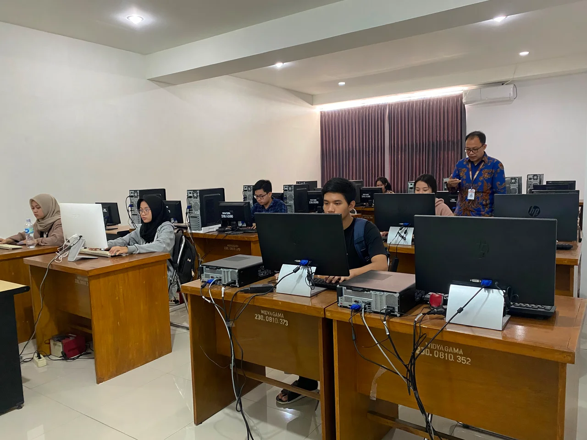
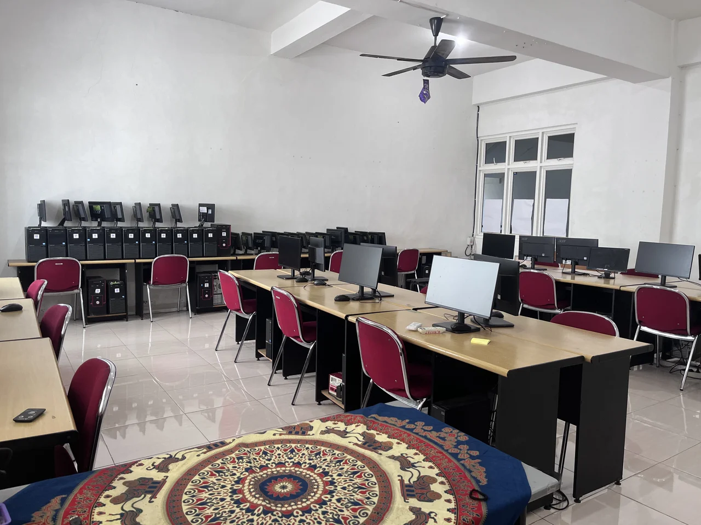
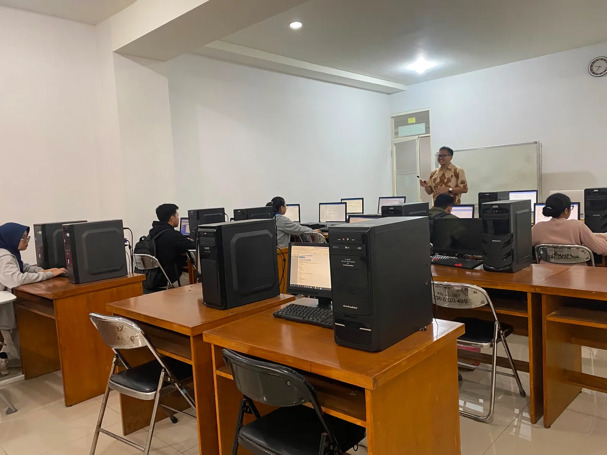
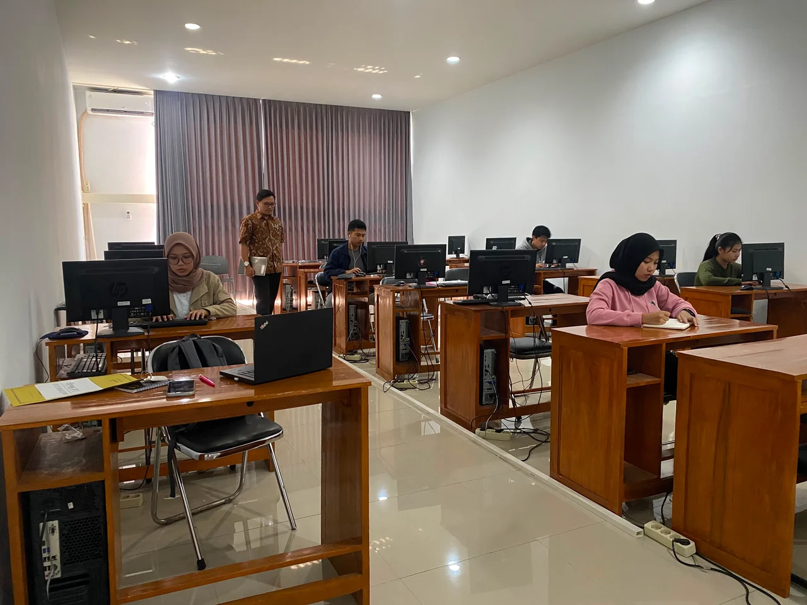

Dekan FSTIFitri Marisa, S.Kom., M.Pd., Ph.D.
NUPTK: 7544756657230140
Mohon maaf, halaman tidak dapat dimuat saat ini. Silakan coba kembali beberapa saat lagi.
Mengenal perjalanan, visi, tata kelola, fasilitas, dan arah pengembangan FSTI Universitas Widya Gama Malang.
FSTI dibentuk sebagai respons terhadap perkembangan ilmu pengetahuan, teknologi, dan kebutuhan dunia kerja di era transformasi digital.
Senat Universitas Widya Gama Malang memberikan pertimbangan pembukaan Fakultas Sains dan Teknologi Informasi melalui rapat resmi yang memenuhi kuorum.
YPPI Widya Gama Malang membahas agenda persetujuan pembukaan fakultas dalam rapat tanggal 13 Juni 2025 dan 8 Oktober 2025 berdasarkan Surat Rektor No. 575/PTS.030.H1/X/2025.
YPPI menerbitkan Surat Persetujuan Pembukaan No. 91/YPPIWM/X/2025 untuk Fakultas Sains dan Teknologi Informasi dengan dua program studi awal.
Berita Acara Pertimbangan Senat
No. 492/PTS.030.H1/BAPS/IX/2025
Berita Acara Rapat YPPI
No. 90/BAYPPIWM/X/2025
Surat Persetujuan Pembukaan Fakultas
No. 91/YPPIWM/X/2025
Fakultas Sains dan Teknologi Informasi (FSTI) Universitas Widya Gama Malang dibuka melalui proses pertimbangan akademik di tingkat Senat Universitas dan persetujuan kelembagaan oleh Yayasan Pembina Pendidikan Indonesia Widya Gama Malang. Tahapan tersebut menjadi dasar resmi pembukaan fakultas sebagai respons terhadap perkembangan ilmu pengetahuan, teknologi informasi, dan kebutuhan dunia kerja di era transformasi digital.
Pertimbangan Senat Universitas dilaksanakan pada tanggal 11 September 2025 melalui rapat yang dihadiri 22 dari 26 anggota senat, sehingga memenuhi syarat kuorum. Selanjutnya, YPPI Widya Gama Malang menerbitkan Surat Persetujuan Pembukaan Fakultas No. 91/YPPIWM/X/2025 pada tanggal 13 Oktober 2025 dengan dua program studi awal, yaitu S1 Informatika dan S1 Sistem dan Teknologi Informasi.
Dalam dokumen persetujuan, pembukaan Fakultas Sains dan Teknologi Informasi ditetapkan berdasarkan Berita Acara Pertimbangan Senat No. 492/PTS.030.H1/BAPS/IX/2025, Surat Permohonan Rektor No. 575/PTS.030.H1/X/2025, Surat Pernyataan Rektor No. 599/PTS.030.H1/X/2025, serta Berita Acara Rapat YPPI No. 90/BAYPPIWM/X/2025.
Rapat YPPI Widya Gama Malang membahas agenda persetujuan pembukaan fakultas pada tanggal 13 Juni 2025 dan 8 Oktober 2025. Melalui proses tersebut, yayasan menyetujui pembukaan Fakultas Sains dan Teknologi Informasi dengan Program Studi S1 Informatika dan S1 Sistem dan Teknologi Informasi di Universitas Widya Gama Malang. Surat Persetujuan Pembukaan No. 91/YPPIWM/X/2025 diterbitkan oleh Prof. H. Abdul Mukthie Fadjar, SH., MS. selaku Ketua Dewan Pengurus YPPI Widya Gama Malang.
Dokumen persetujuan juga memuat arahan agar program studi segera diusulkan kepada instansi berwenang serta menegaskan tanggung jawab penuh dalam pengelolaan setelah memperoleh persetujuan dari instansi berwenang. Hal ini menunjukkan bahwa pembentukan FSTI disiapkan melalui tahapan administratif, akademik, dan kelembagaan yang terstruktur.
Pembukaan FSTI menjadi bagian dari penguatan ekosistem akademik Universitas Widya Gama Malang dalam menghadirkan pendidikan tinggi yang responsif terhadap perkembangan teknologi informasi dan kebutuhan masyarakat. Dengan semangat inovasi, kolaborasi, dan keberlanjutan, FSTI diarahkan untuk menghasilkan lulusan yang kompeten, profesional, berdaya saing, serta mampu memberikan kontribusi nyata dalam pembangunan bangsa.
Innovate Boldly, Lead Globally
Menjadi Fakultas Sains dan Teknologi Informasi yang bermutu, mandiri, bermartabat, dan berwawasan global, serta unggul dalam pengembangan teknologi digital, kecerdasan artifisial, dan technopreneurship berbasis kebutuhan masyarakat dan industri pada tahun 2045.
Menyelenggarakan pendidikan dan pembelajaran dalam bidang sains dan teknologi informasi yang bermutu, bertaqwa kepada Tuhan Yang Maha Esa, serta berjiwa technopreneurship.
Menyelenggarakan penelitian bidang teknologi digital, kecerdasan artifisial, dan technopreneurship yang berkontribusi terhadap pengembangan ilmu pengetahuan dan teknologi baik tingkat nasional maupun global.
Menyelenggarakan pengabdian masyarakat dalam bidang teknologi digital, kecerdasan artifisial, dan technopreneurship yang berkontribusi selaras dengan kebutuhan masyarakat dan industri baik nasional maupun global.
Menjalankan sistem tata kelola lembaga yang bermutu, mandiri, bermartabat, dan berkelanjutan berbasis teknologi informasi.
Menjalin kerjasama kemitraan dengan berbagai lembaga secara mandiri dan berkelanjutan di tingkat nasional maupun global.
Menghasilkan lulusan yang bermutu, bertaqwa, berkebangsaan, dan berjiwa technopreneurship dalam bidang teknologi digital dan kecerdasan artifisial yang mampu bersaing di tingkat nasional dan global.
Menghasilkan penelitian dan karya inovatif yang bermutu dan kreatif dalam bidang teknologi digital, kecerdasan artifisial, dan technopreneurship yang relevan dengan kebutuhan masyarakat dan industri di tingkat nasional maupun global.
Menghasilkan karya pengabdian masyarakat dalam bidang teknologi digital, kecerdasan artifisial, dan technopreneurship untuk menunjang pembangunan masyarakat dan industri di tingkat nasional maupun global.
Menghasilkan tata kelola lembaga dan sumber daya manusia yang profesional, berintegritas, dan bertanggung jawab.
Struktur organisasi FSTI menyesuaikan Susunan Organisasi dan Tata Kerja Universitas Widya Gama Malang. Fakultas dipimpin oleh Dekan yang didampingi satu Wakil Dekan, serta didukung Senat Fakultas, Gugus Penjamin Mutu (GPM), Program Studi, Laboratorium, dan Bagian Tata Usaha.

Kepemimpinan FSTI UWG Malang mengarahkan pengembangan akademik, inovasi, dan layanan pendidikan pada setiap program studi.

Dekan FSTINUPTK: 7544756657230140
NUPTK: 5942766667130422
 Kaprodi BD & SISTEKIN
Kaprodi BD & SISTEKIN
NUPTK: 7860771672130272
FSTI menyediakan ruang akademik, laboratorium, dan fasilitas pendukung kegiatan kemahasiswaan untuk menunjang pembelajaran, praktikum, serta organisasi mahasiswa.

Ruang pertemuan untuk rapat pimpinan, koordinasi unit, dan kegiatan formal fakultas.

Ruang kelas untuk kegiatan belajar-mengajar tatap muka dan diskusi akademik.

Laboratorium pendukung praktikum multimedia dan kebutuhan Program Studi Bisnis Digital.

Laboratorium untuk praktikum jaringan komputer, infrastruktur, dan topik terkait konektivitas.

Laboratorium Business Intelligence dan multimedia untuk praktikum data, visualisasi, dan konten digital.

Laboratorium komputer umum untuk praktikum pemrograman, sistem, dan mata kuliah berbasis komputer.
Temui tim dosen dan peneliti kami, serta jelajahi tiga program studi unggulan FSTI UWG Malang.